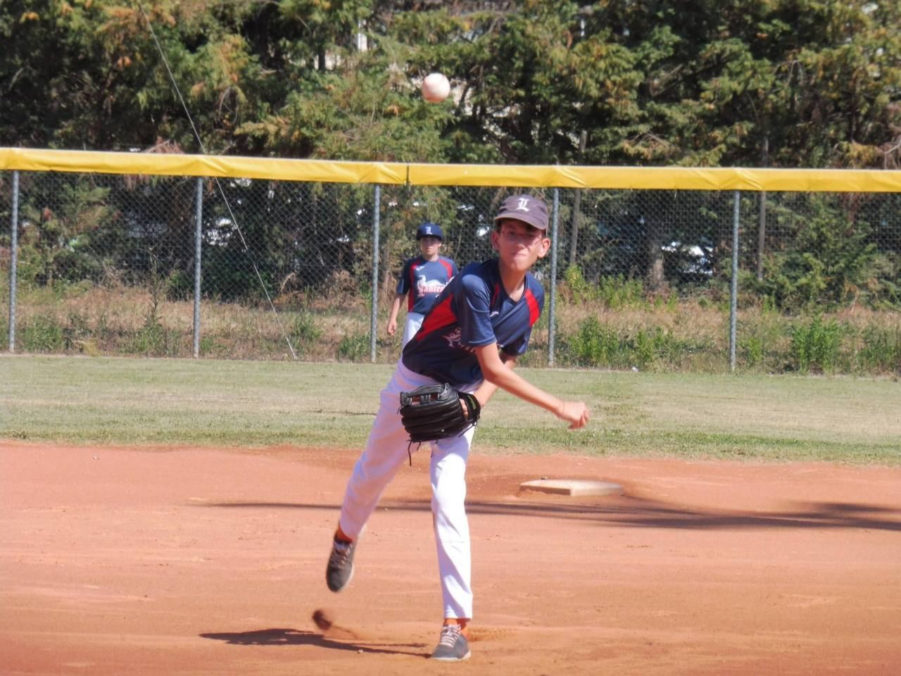
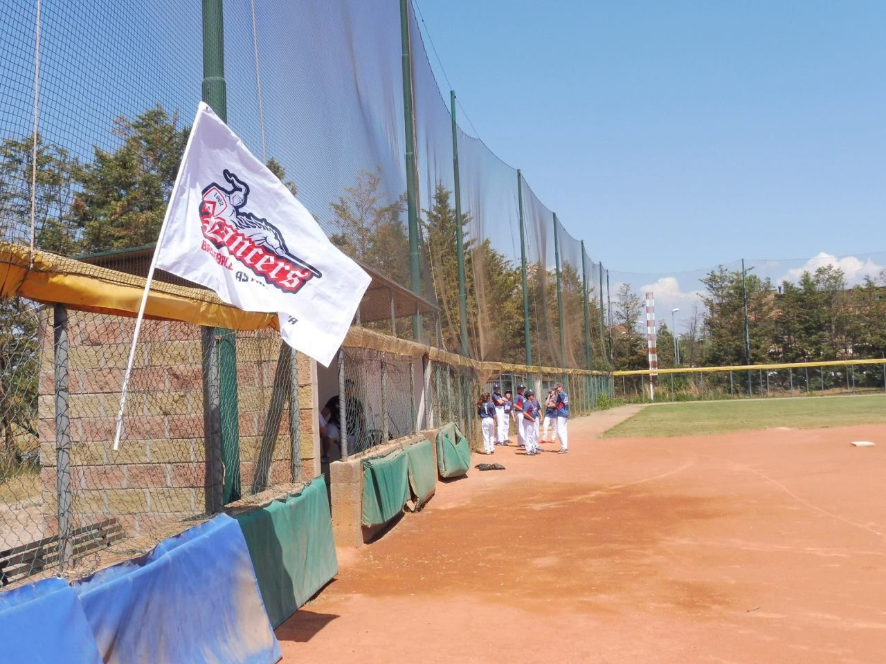
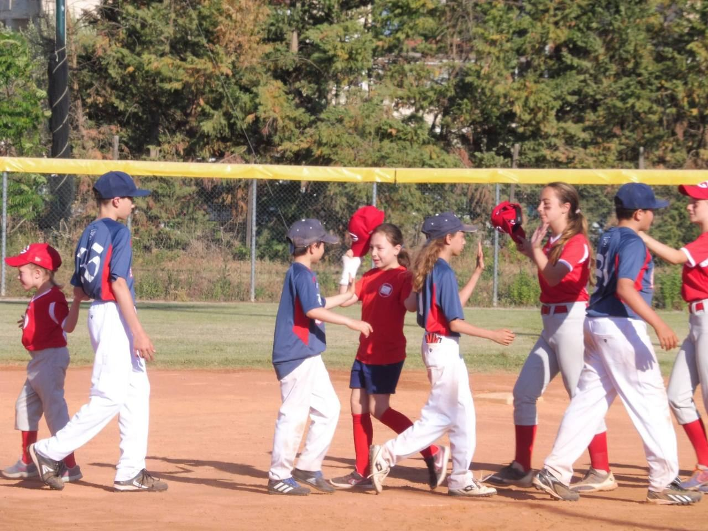

Prova non buona per l’under 12 di Zalonici, deficitaria in quella che in altre occasioni era il punto di forza: la difesa. Oggi invece la squadra è apparsa stanca e poco concentrata, le battute delle ragazze maremmane passavano le fila fiorentine come coltelli nel burro fino a fondo campo, dando il tempo alle padroni di casa di passare di base in base. Un peccato perché con un po’ di attenzione i lancerini potevano tranquillamente tornare a casa con l’intera posta in palio, dato che la squadra grossetana femminile non è sembrata irresistibile. E allora viene da domandarsi com’è possibile che questa sia la stessa squadra che ha lottato colpo su colpo con uno squadrone come il Chianti. C’è da dire che oggi i Lancers contavano qualche assenza di troppo, ma non è giusto recriminare sulle assenze. Piuttosto può darsi che la stanchezza sia dovuta alla sfacchinata con oltre due ore di viaggio sotto il sole di un caldo pomeriggio di quasi estate. Tant’è che l’unico davvero “in palla”, Gabriele Paoli, non era reduce dal viaggio in quanto si trovava da giorni in Maremma per il ponte del 2 giugno. Forse potrebbe valer la pena di fare una programmazione migliore.
Questi i protagonisti della gara: Lorenzo Gianrossi, Tommaso Lenzerini, Paolo Manetti, Silvia Onori, Gabriele Paoli, Alessio Pellegrini, Lorenzo Sarubbi, Lorenzo Scarpulla, Alfredo Signorini.

Secondo inning 0-0. Frazione velocissima. Si segnala Manetti che batte ma non riesce a arrivare in prima base. Lanciatore Paoli, ricevitore Pellegrini. Paoli è perfetto: tre battitori e tre eliminati per strike-out.
Terzo inning 3-3. Onori, promossa in prima base per 4 balls, è lesta a rubare prima una e poi due basi completando il giro del diamante. Lenzerini, che anche lui aveva raggiunto la prima base per base-ball, prova a rubare ma è eliminato proprio sopra la terza base. Pellegrini, dopo aver raggiunto la prima per 4 balls, sfrutta un’errata gestione della palla da parte degli avversari e va a punto. Lanciatore Paoli, ricevitore Pellegrini. Paoli inizia come i primi due innings ed elimina due battitrici, poi però le maremmane infilano quattro battute di fila che fruttano, ciascuna, due basi e tre punti.
Quarto inning 4-4. Inning privo di battute dei nostri. Sarubbi e Gianrossi vengono colpiti dalla pallina e poi rubano, arrivando rispettivamente a punto e in terza base. Poi anche Gianrossi prova a rubare il punto ma è eliminato proprio sopra casa base, similmente a Lenzerini. Onori, Lenzerini e Paoli rubano una base dopo l’altra e arrivano a punto, effettuando anche qualche spettacolare scivolata. Lanciatore Pellegrini, ricevitore Scarpulla. Quattro ragazze, di cui due giunte in prima base per per base-ball, una perché colpita e una in seguito a una battuta valida, riescono a tornare a casa base.

Sesto inning 1-1. Dei tre che riescono a raggiungere la prima base solo Pellegrini va a punto, sfruttando la battuta di Signorini che è sfortunato perché la pallina va nei pressi della prima base ed è un gioco da ragazzi eliminarlo. Lanciatori Signorini e Scarpulla, ricevitori Scarpulla e Sarubbi. La n° 45 del Grosseto, che era stata promossa in prima base per 4 balls e poi era giunta fino in terza, sfrutta la battuta di una sua compagna per mettere a segno il punto della vittoria che pone fine all’incontro.